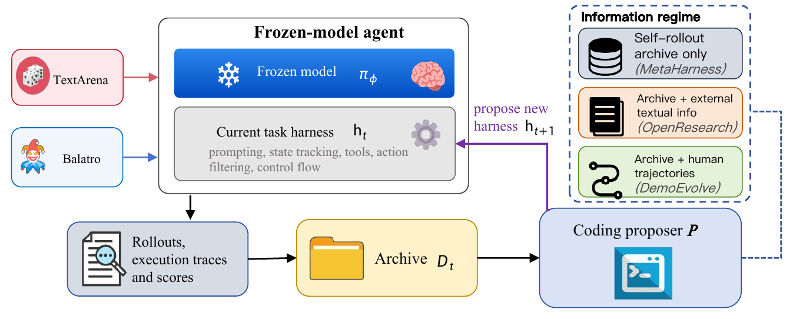

01研究背景与问题定义
自动 Harness 搜索从终局分数知道某版代码赢了，却常不知道为什么输。复杂游戏中的失败可能源于状态没展示清楚、资源价值理解错误、行动空间不合适或解析与控制漏洞。只看自生成失败轨迹，搜索器可能反复强化同一种误解；加入规则说明也未必告诉它在具体状态应关注什么。
DemoEvolve 将熟练人类轨迹作为代码 proposer 的诊断参照，帮助其把行为差距转成外部程序修改。模型保持冻结，人类轨迹不作为动作级微调数据。研究的核心是示范信息能否提高 Harness 搜索的反馈质量，而不是示范是否能直接教会模型玩游戏。
| 角色 | 读取什么 | 改变什么 |
|---|---|---|
| 任务执行模型 | Harness 渲染的观察与工具 | 在当前局中选择动作；权重不更新 |
| 代码 proposer | 旧代码、分数、原始执行日志与可用示范 | 新 Harness 的可执行程序 |
| 固定种子模拟器 | 动作和完整环境状态 | 推进世界并产生可复现结果 |
02方法与技术路线
外循环维护完整文件档案，proposer 可按需查看代码与原始轨迹。示范只扩充它的观察，不替代环境评估与留出测试。
搜索档案 D
每个候选保存代码、开发集得分、世界轨迹与原始执行 trace，包括提示、解析动作和错误。
人类轨迹 Tᴴ
同一世界观察—动作格式，附任务结果；展示熟练动作发生的具体状态。
候选 Harness
修改状态表示、提示、行动过滤、工具暴露或控制流；可让确定性代码承担脆弱计算。
归档与选择
写回真实轨迹和结果供下一轮使用；最终在 proposer 未见的测试实例评估。
可复现世界并不代表代理知道未来
固定种子后，完整模拟状态的转移可以是确定的；代理只看到 Harness 暴露的部分观察，它不知道隐藏状态和未来后果。固定种子方便重复比较候选，却没有消除代理侧不确定性。
这使游戏成为适合诊断的受控动态环境：长程资源与延迟反馈仍然存在，但不同代码可以在同条件下重跑。必须避免进一步推断“同种子分数提高”就是一般机制改善，候选仍可能碰巧适配开发轨迹。
为什么必须保留原始 Harness 执行日志
世界轨迹说明采取了哪些动作，原始 trace 才能说明动作是如何由提示、模型输出、解析和工具调用产生。相同错误动作可能来自模型判断，也可能来自代码解析错误；只保留前者会把工程漏洞误归给策略能力。
proposer 通过正常文件操作查询整个档案，不被强制限制为某份压缩摘要。它可以比较多个旧版本和失败实例，再写候选。诊断仍由模型判断，论文没有提供一个把示范差距唯一映射成代码补丁的确定算法。
示范怎样补充规则知识的不足
外部文本能说明规则和一般策略，人类轨迹则同时提供具体状态、动作和结果。例如资源何时应该保留，必须结合当时手牌、构筑和未来需求理解，单独一句“注意经济”难以定位缺少哪个状态摘要或行动工具。
比较的重点不是逐步模仿所有人类动作，而是寻找代理缺少的可执行支持。有些改进把概率或合法动作计算移到确定性代码，甚至降低模型在某些局部决定中的作用；因此完整系统更强不等于冻结模型自身推理更强。
论文原始结构图 · 点击对照

03实验设计与结果分析
示范是否比仅增加一般知识更有效
| 方法 | ID：9 局 | OOD：6 局 | 总体：15 局 |
|---|---|---|---|
| BalatroLLM | 17.00 / 3 | 16.83 / 2 | 16.93 / 5 |
| Meta-Harness | 19.33 / 4 | 16.33 / 2 | 18.13 / 6 |
| OpenResearch | 16.67 / 2 | 17.00 / 2 | 16.80 / 4 |
| DemoEvolve | 23.33 / 8 | 20.00 / 4 | 22.00 / 12 |
文本知识条件没有稳定超过自轨迹搜索，人类示范条件则同时改善生存深度与完成局数，且在 OOD 仍有增益。这支持示范提供了与程序诊断有关的具体信息，而不是“读更多资料必然更好”。但 15 局由五个 seed 各重复三次构成，完成率的估计既受小样本也受 seed 覆盖限制。最终轮数采用截顶统计，不能把更高均值解释为没有上限的存活期望，也不能把 12/15 当成稳定广域成功率估计。
从编辑轨迹能看出什么，不能看出什么
论文分析修改落在提示、阶段、状态或工具等位置，并区分仅生成看似合理修改与修改真正改变行为。分布可以帮助理解搜索器把注意力放在哪里，但某类修改更频繁不证明它因果贡献更大：多个编辑常共同生效，且候选选择受开发集噪声影响。
示范整理、收集和代码搜索均是前置成本。冻结模型避免参数训练，却不意味着系统没有学习投入；本文实证更适合支持“诊断信息改变搜索结果”，尚不能从最终游戏分数算出跨部署次数的成本回收点。
04贡献、局限与综合评价
最有价值的是把示范用于改进接口与控制
示范既可教动作，也可让系统设计者看见当前接口缺少什么。DemoEvolve 研究后一条路径，把熟练行为作为 Harness 诊断证据，允许搜索器把脆弱计算和状态管理写进程序。这拓宽了示范在模型外学习中的用途。
功能性修改比代码数量更值得观察
搜索器可以写很多补丁却没有改变模型实际可见信息或动作执行。论文强调区分分数上升与功能上真正生效的修改，是重要的研究纪律。反过来，代码把决策完全接管也可能有效，但这更接近发现任务程序，而非改善模型推理。可固定模型输出，回放不同 Harness 对同一观察的解析和动作选择，直接检测状态特征、过滤器或控制流是否改变行为；这样才能把“更高分”连到具体程序机制，减少开发种子噪声的解释空间。
示范优势可能来自状态信息，也可能来自策略质量
人类轨迹通常同时带来更好的动作选择和更广的状态覆盖，当前对照没有完全隔离这两者。如果只是覆盖了代理从未到达的关键阶段，经过筛选的成功代理轨迹也可能有类似作用；如果关键是人类策略判断，跨策略质量的差异应更明显。
可以保持状态与轨迹数量一致，只替换动作来源或顺序，再评估 proposer 的故障定位、有效编辑率及留出收益。若状态匹配后人类优势显著缩小，贡献应聚焦覆盖与具体诊断；若仍保留，才更支持熟练策略参照的特殊价值。现有结果支持示范改善复杂动态世界中的 Harness 搜索，但不等于示范可普遍解决稀疏反馈或开发集适配。